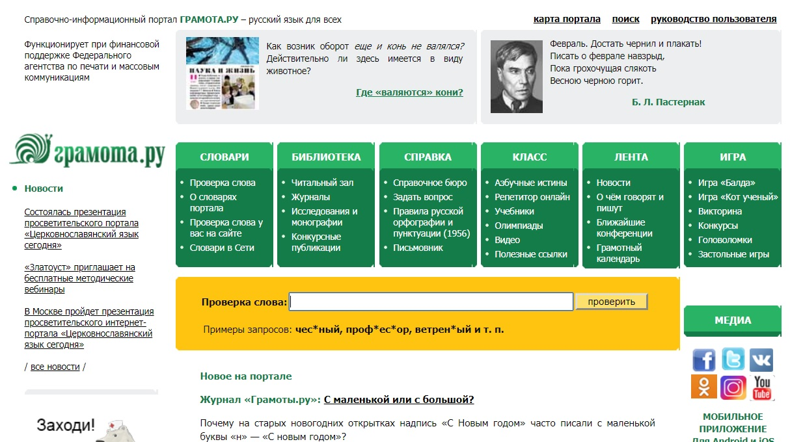

Моя страница

ФИО: Лепешенкова Ульяна Сергеевна
Место учёбы: НИУ ВШЭ, ОП Филология, БФИЛЛ182
Научные интересы: Языки, художественный перевод текстов
О себе: Люблю единорогов
Современные технологии существенно облегчают филологам жизнь. С помощью цифровых технологий можно обеспечить сохранность культурного наследия, усовершенствоать методы сбора и анализа данных. В исследовании литературы успешно применяются статистические методы, построение таблиц, графиков и даграмм.
Достоинство: удобное меню, много полезных разделов
Недостатки: не нашла
